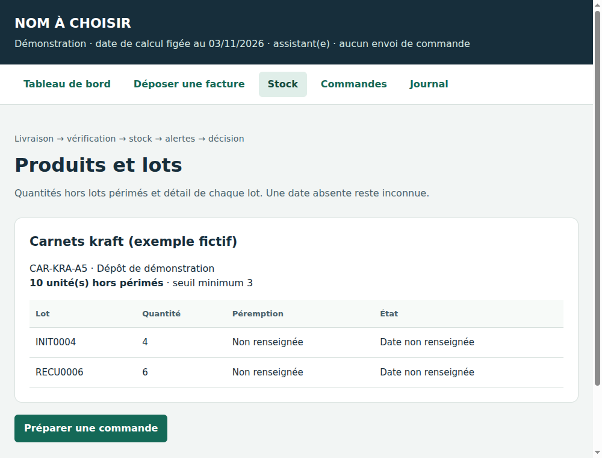

Pour les commerces et les petites boutiques
Une livraison reçue.
Un stock à jour.
Ce qui est en rayon aujourd'hui ne devrait pas se perdre entre un bon de livraison et un tableur. Voici un premier geste à essayer, avec des données entièrement fictives.
Essayez une réception
Il reste 4 carnets à couverture kraft. Le bon fictif DEMO-006 annonce 6 carnets : vérifiez la quantité, puis confirmez.
- En stock
- carnets
- À réceptionner
- 6 carnets
Avant confirmation : 4 carnets en stock, livraison en attente.
Simulation locale simplifiée, sans serveur ni envoi. Rien n'est enregistré : recharger la page remet les 4 carnets de départ. Ce petit exemple ne remplace pas le produit.
Le résultat attendu
Le stock passe de 4 à 10. Essayez de confirmer une seconde fois : le même bon ne doit pas ajouter six carnets de plus. Vous pouvez recommencer autant de fois que vous le voulez.
D'où vient ce geste ?
Le prototype dentaire existant sait réceptionner une facture vérifiée, suivre des produits et des lots, signaler des alertes et préparer une proposition de commande à valider. La capture ci-dessous montre sa vraie interface avec des carnets fictifs, ajoutés pour cette présentation.

Une bêta, avec des limites explicites
L'adaptation aux commerces est en préparation : elle n'a pas encore été éprouvée dans une boutique. La démonstration ci-dessus illustre un geste existant ; elle n'annonce pas un logiciel prêt à déployer.
- Aucune liaison de caisse, aucun encaissement.
- Aucune commande envoyée automatiquement à un fournisseur.
- Le prototype est local, sans authentification ni travail à plusieurs utilisateurs.
- La lecture de factures dépend du format : les anomalies demandent une vérification humaine. Aucun gain de temps chiffré n'est établi.
Comment le geste a été vérifié
Le moteur du prototype a des essais de réception avec numéro de lot, de refus d'une facture déjà intégrée et de sortie supérieure au stock disponible. Cette page rejoue seulement la réception et le refus du doublon, avec du JavaScript local. Les autres fonctions du prototype ne sont pas simulées ici.
Parlons de votre stock
Quels produits suivez-vous ? Comment notez-vous les livraisons et les écarts aujourd'hui ? Nous vérifions ensemble si cette piste convient, avant un devis écrit.
Échanger sur mon besoin